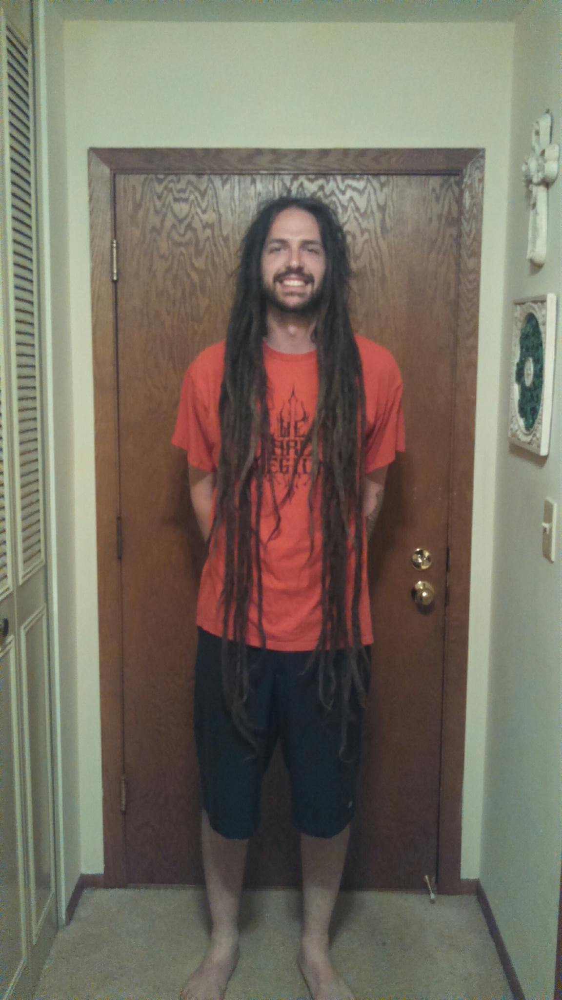

On this page I will talk about what brought me to CO and into CodeCraft.
2015, A sharp turn.
June
In the summer of 2015 I was gearing up to have one of the best years of my life. I got hired to play bass on a major tour with the most popular metal band in MN. I had previously thought that I wasn't going to tour anymore so this was a welcomed surprise. It was a dream tour. 3.5 weeks long and starting at the end of July. It would have the biggest crowds I had played in front of and I would get to meet some of my favorite bands. I started rehearsals and prep.
July
On the 4th of July I got engaged to my GF of 6 years. It was an exciting time. She started planning the wedding almost imediately. I continued rehearsals with the band and things were rolling along smoothly until disaster struck. One week before the tour started one of our guitar players killed himself. It was a devastating time and of course the tour was cancelled. I knew I would never go on another tour and I needed a life change. I cut off my dreadlocks.

August
My emotions were subsiding and I was getting back to my normal days. I got hired to play a CD release show for one of my coworkers. He had recently made a CD and it sounded great. While preparing for this show my vehicle broke down. The next day I found out my coworker hired a different musician for his show without telling me. Another gig lost and I couldn't afford to fix my vehicle. I knew I needed to make some sort of change in my life to keep financial stresses from hitting so often. I needed to make more money. I was not